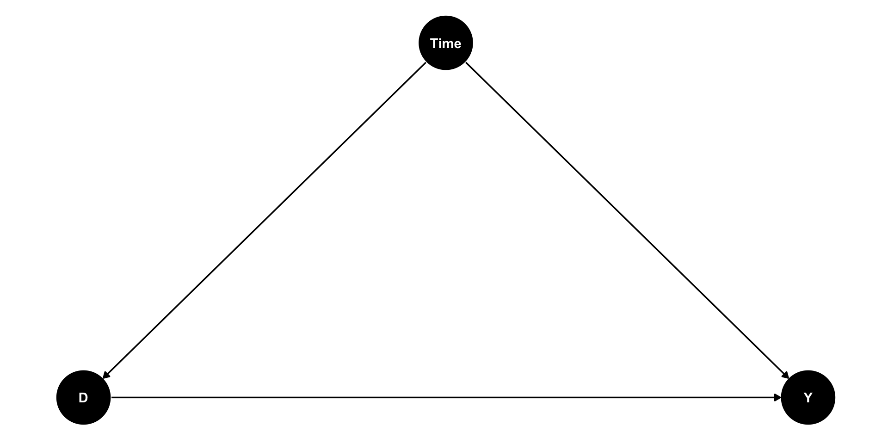

Last week we introduced DAGs as a method to represent our causal assumptions and infer how we might estimate the causal effects of interest.
We briefly discussed regression adjustment and instrumental variables
We worked through a method to estimate causal effects using IPW.
This week
We will look at other methods used to estimate causal effects, along with methods used for special situations, including:
regression adjustment
doubly robust estimation
matching
difference in differences
fixed effects and methods for panel data
g-methods
Week 8 Roadmap
Stabilized weighting
Doubly robust estimators
Finite sample bias
Matching estimators
Fixed Effects
Event Studies
Difference in Differences (DiD)
Heterogeneity and differential timing
Causal Effect Estimation
Inverse Probability Weighting
Last week we used IPW to create a pseudopopulation where, for every confounder level, the numbers of treated and untreated were balanced.
IPW requires us to build a model to predict the treatment, depending on the confounders (assuming we have data for all the confounders).
Inverse Probability Weighting
Repeating our our example with our prior process, first we calculate the ipw weights and estimate the ATE using the weights.
ATE estimate by IPW
dat_ <- causalworkshop::net_data |> dplyr::mutate(net =as.numeric(net))propensity_model <-glm( net ~ income + health + temperature , data = dat_, family =binomial())net_data_wts <- propensity_model |> broom::augment(newdata = dat_, type.predict ="response") |># .fitted is the value predicted by the model# for a given observation dplyr::mutate(wts = propensity::wt_ate(.fitted, .exposure = net))net_data_wts |>lm(malaria_risk ~ net, data = _, weights = wts) |> broom::tidy(conf.int =TRUE) |> gt::gt() |> gtExtras::gt_theme_espn() |> gt::as_raw_html()
term
estimate
std.error
statistic
p.value
conf.low
conf.high
(Intercept)
42.74
0.4420
96.69
0.000e+00
41.87
43.61
net
-12.54
0.6243
-20.10
5.498e-81
-13.77
-11.32
Inverse Probability Weighting
The function 1propensity::wt_ate calculates unstabilized weights by default. In the last lecture we looked at the distribution of weights and decided they were stable enough, because none of the weights were too big or too small.
Let’s explore the question of IPW stabilization a bit more.
Figure 1
Inverse Probability Weighting
Stabilized weights
The IP weights (given covariate set \(L\)) are \(W^A=1/\mathbb{E}[D|L]\). Because the denominator can be very close to \(0\) or \(1\) the estimates using these weights can be unstable.
Stabilized weights are often used to address this, e.g. the function propensity::wt_ate with stabilize = TRUE multiplies the weights by the mean of the treatment so in this case \(SW^A=\mathbb{E}[D]/\mathbb{E}[D|L]\).
Inverse Probability Weighting
V-Stabilized weights
Baseline covariates (\(V\subset L\)) are also used to stabilize IP weights: \(SW^A(V)=\mathbb{E}[D|V]/\mathbb{E}[D|L]\).
Note the the variables \(V\) need to be included in the numerator and the denominator (as part of \(L\))
V-stabilization results in IP weights that are more stabilized than the ones without V.
Inverse Probability Weighting
We know that IPW weighting should create a pseudo-population that makes the covariates more balanced by treatment. In the last lecture we checked this using histograms. Here we check this directly via the statistics of the data:
gtsummary::tbl_summary( net_data_wts , by = net , include =c(net,income,health,temperature,malaria_risk)) |># add an overall column to the table gtsummary::add_overall(last =TRUE)
Next we use bootstrapping to generate proper confidence intervals for the effect, first by creating a function to generate (unstabilized) ipw effect estimates for each bootstrap split:
fit_ipw <-function(split, ...) {# get bootstrapped data sample with `rsample::analysis()`if("rsplit"%in%class(split)){ .df <- rsample::analysis(split) }elseif("data.frame"%in%class(split)){ .df <- split }# fit propensity score model propensity_model <-glm( net ~ income + health + temperature,data = .df,family =binomial() )# calculate inverse probability weights .df <- propensity_model |> broom::augment(type.predict ="response", data = .df) |> dplyr::mutate(wts = propensity::wt_ate(.fitted, net))# fit correctly bootstrapped ipw modellm(malaria_risk ~ net, data = .df, weights = wts) |> broom::tidy()}
Inverse Probability Weighting
Next we use our function to bootstrap proper confidence intervals:
# create bootstrap samplesbootstrapped_net_data <- rsample::bootstraps( dat_,times =1000,# required to calculate CIs laterapparent =TRUE)# create ipw and fit each bootstrap sampleresults <- bootstrapped_net_data |> dplyr::mutate(ipw_fits = purrr::map(splits, fit_ipw))
Regression Adjustment
IPW estimates rely on a model to predict the treatment using covariate/confounder values. We know that we can also predict the effect of treatment by building a model to predict the outcome using a regression model, regressing the effect on the treatment and covariate/confounder values.
regression adjustment
outcome_model <-glm( malaria_risk ~ net + income + health + temperature + insecticide_resistance +I(health^2) +I(temperature^2) +I(income^2),data = dat_)outcome_model |> broom::tidy(conf.int =TRUE)
And we can also bootstrap the regression adjustment estimates to get confidence intervals, first by creating the estimation function, then generating bootstrapped estimates, like we did with IPWs:
fit_reg <-function(split, ...) {# get bootstrapped data sample with `rsample::analysis()`if("rsplit"%in%class(split)){ .df <- rsample::analysis(split) }elseif("data.frame"%in%class(split)){ .df <- split }# fit outcome modelglm(malaria_risk ~ net + income + health + temperature + insecticide_resistance +I(health^2) +I(temperature^2) +I(income^2), data = .df )|> broom::tidy()}both_results <- results |> dplyr::mutate(reg_fits = purrr::map(splits, fit_reg))
IPW vs Regression Adjustment
We can compare the results:
both_results_dat <- both_results |> dplyr::mutate(reg_estimate = purrr::map_dbl( reg_fits,# pull the `estimate` for net for each fit \(.fit) .fit |> dplyr::filter(term =="net") |> dplyr::pull(estimate) ) , ipw_estimate = purrr::map_dbl( ipw_fits,# pull the `estimate` for net for each fit \(.fit) .fit |> dplyr::filter(term =="net") |> dplyr::pull(estimate) ) )
Note that each mean ATE estimate is within the CIs of the other ATE mean estimate.
IPW vs Regression Adjustment
There is a package (boot) that performs cross-validation and CI estimation at the same time:
use the boot package for CI estimation of regression adjustment
# bootstrap (1000 times) using the fit_reg functionboot_out_reg <- boot::boot(data = causalworkshop::net_data |> dplyr::mutate(net =as.numeric(net)) , R =1000 , sim ="ordinary" , statistic = (\(x,y){ # x is the data, y is a vector of row numbers for the bootstrap samplefit_reg(x[y,]) |> dplyr::filter(term =="net") |> dplyr::pull(estimate) }))# calculate the CIsCIs <- boot_out_reg |> boot::boot.ci(L = boot::empinf(boot_out_reg, index=1L, type="jack"))tibble::tibble(CI =c("lower", "upper") , normal = CIs$normal[-1] , basic = CIs$basic[-(1:3)] , percent = CIs$percent[-(1:3)]) |> gt::gt() |> gtExtras::gt_theme_espn() |> gt::as_raw_html()
CI
normal
basic
percent
lower
-12.88
-12.85
-12.9
upper
-11.86
-11.85
-11.9
Doubly Robust Estimation
Don’t Put All your Eggs in One Basket
We’ve learned how to use linear regression and propensity score weighting to estimate \(\left(E[Y|D=1] - E[Y|D=0]\right) | X\). But which one should we use and when?
When in doubt, just use both! Doubly Robust Estimation is a way of combining propensity score and linear regression in a way so you don’t have to choose only one of them.
The doubly robust estimator is called doubly robust because it only requires one of the models, \(\hat{P}(x)\) or \(\hat{\mu}(x)\), to be correctly specified.
Assume that \(\hat{\mu_1}(x)\) is correct. If the propensity score model is wrong, we wouldn’t need to worry. Because if \(\hat{\mu_1}(x)\) is correct, then \(E[D_i(Y_i - \hat{\mu_1}(X_i))]=0\). That is because the multiplication by \(D_i\) selects only the treated and the residual of \(\hat{\mu_1}\) on the treated have, by definition, mean zero.
This causes the whole thing to reduce to \(\hat{\mu_1}(X_i)\), which is correctly estimated \(E[Y^1]\) by assumption. Similar reasoning applies to the estimator of \(E[Y^0]\).
Doubly Robust Estimation
Here we deliberately bias the IPW estimate by replacing the propensity score by a random uniform variable that goes from 0.1 to 0.9 (we don’t want very small weights to blow up the propensity score variance). Since this is random, there is no way it is a good propensity score model, but the doubly robust estimator still manages to produce an estimation that is very close to when the propensity score was estimated with logistic regression.
Assume that the propensity score \(\hat{P}(X_i)\) is correctly specified. In this case, \(E[D_i - \hat{P}(X_i)]=0\), which wipes out the part dependent on \(\hat{\mu_1}(X_i)\). This reduces the doubly robust estimator to the propensity score weighting estimator \(\frac{D_iY_i}{\hat{P}(X_i)}\), which is correct by assumption.
So, even if the \(\hat{\mu_1}(X_i)\) is wrong, the estimator will still be correct, provided that the propensity score is correctly specified.
Doubly Robust Estimation
define a DRE with a bad regression model
doubly_robust_bad_reg <-function(df, X, D, Y){ ps <-# propensity scoreas.formula(paste(D, " ~ ", paste(X, collapse="+"))) |> stats::glm( data = df, family =binomial() ) |> broom::augment(type.predict ="response", data = df) |> dplyr::pull(.fitted) mu0 <-rnorm(dim(df)[1], 0, 1) # wrong mean response D == 0 mu1 <-rnorm(dim(df)[1], 0, 1) # wrong mean response D == 1# convert treatment factor to integer | recast as vectors d <- df[,D] |> dplyr::pull(1) |>as.character() |>as.numeric() y <- df[,Y] |> dplyr::pull(1)mean( d*(y - mu1)/ps + mu1 ) -mean(( 1-d)*(y - mu0)/(1-ps) + mu0 )}
Once more, messing up the conditional mean model alone yields only slightly different ATE. The magic of doubly robust estimation happens because in causal inference, there are two ways to remove bias from our causal estimates: you either model the treatment mechanism or the outcome mechanism. If either of these models are correct, you are good to go.
One caveat is that, in practice, it’s very hard to model precisely either of those. More often, what ends up happening is that neither the propensity score nor the outcome model are 100% correct. They are both wrong, but in different ways. When this happens, it is not exactly settled [1][2][3] if it’s better to use a single model or doubly robust estimation. At least it gives you two possibilities of being correct.
Finite Sample Bias
Finite Sample Bias
We know that not accounting for confounders or blocking open backdoor paths can bias our causal estimates, but it turns out that even after accounting for all confounders, we may still get a biased estimate with finite samples. Many of the properties we tout in statistics rely on large samples—how “large” is defined can be opaque. Let’s look at a quick simulation. Here, we have an exposure/treatment, \(X\), an outcome, \(Y\), and one confounder, \(Z\). We will simulate \(Y\), which is only dependent on \(Z\) (so the true treatment effect is 0), and \(X\), which also depends on \(Z\).
\[
\begin{align*}
Z &\sim \mathscr{N}(0,1)\\
X & = \mathrm{ifelse}(0.5+Z>0,1,0)\\
Y & = Z + \mathscr{N}(0,1)
\end{align*}
\]
Finite Sample Bias
Sampling code
set.seed(928)n <-100finite_sample <- tibble::tibble(# z is normally distributed with a mean: 0 and sd: 1z =rnorm(n),# x is defined from a probit selection model with normally distributed errorsx = dplyr::case_when(0.5+ z +rnorm(n) >0~1,TRUE~0 ),# y is continuous, dependent only on z with normally distrbuted errorsy = z +rnorm(n))
Finite Sample Bias
If we fit a propensity score model using the one confounder \(Z\) and calculate the weighted estimator, we should get an unbiased result (which in this case would be \(0\)).
fit the propensity score model with finite samples
Our effect of is pretty far from 0, although it’s hard to know if this is really bias, or something we are just seeing by chance in this particular simulated sample.
To explore the potential for finite sample bias, we can rerun this simulation many times at different sample sizes:
fit the propensity score model with different number of finite samples
Finite sample bias present with ATE weights created using correctly specified propensity score model, varying the sample size from n = 50 to n = 10,000
Finite Sample Bias
This is demonstrates finite sample bias. Notice that even when the sample size is quite large (5,000) we still see some bias away from the “true” effect of 0. It isn’t until a sample size larger than 10,000 that we see this bias effectively disappear.
Estimands that utilize weights that are unbounded (i.e. that theoretically can be infinitely large) are more likely to suffer from finite sample bias. The likelihood of falling into finite sample bias depends on:
the estimator you have chosen (i.e. are the weights bounded?)
the distribution of the covariates in the exposed and unexposed groups (i.e. is there good overlap? Potential positivity violations, when there is poor overlap, are the regions where weights can become too large)
the sample size.
Matching
Matching estimator
When some confounder X makes it so that treated and untreated are not initially comparable, we can make them so by matching each treated unit with a similar untreated unit - finding an untreated twin for every treated unit. In making such comparisons, treated and untreated become again comparable.
As an example, let’s suppose we are trying to estimate the effect of a trainee program on earnings. Here is what the trainees looks like:
However, if we look at the data, we notice that trainees are much younger than non trainees, which suggests that age could be a confounder.
Matching estimator
We can use matching on age to try to correct that.
We will take unit 1 from the treated and pair it with unit 27, since both are 28 years old. Unit 2 we will pair it with unit 34, unit 3 with unit 37, unit 4 we will pair it with unit 35 and so on. When it comes to unit 5, we need to find someone with age 29 from the non treated, but that is unit 37, which is already paired.
This is not a problem, since we can use the same unit multiple times. If more than 1 unit is a match, we can choose randomly between them.
If we take the mean of the last column we get the ATE estimate while controlling for age. Notice how the estimate is now positive, compared to the previous one which compared the simple difference in means.
This is a contrived example, just to introduce the matching estimator.
Matching estimator
In practice, we usually have more than one feature and units don’t match perfectly. In this case, we have to define some measurement of proximity to compare how units are close to each other.
One common metric for this is the euclidean norm \(||X_i - X_j||\). This difference, however, is not invariant to the scale of the features.
This means that features like age, that take values on the tens, will be much less important when computing this norm compared to features like income, which take the order of thousands.
For this reason, before applying the norm, we need to scale the features so that they are on roughly the same scale.
Matching estimator
Having defined a distance measure, we can now define the match as the nearest neighbour to the sample we wish to match.
We can write the matching estimator the following way:
Where \(Y_{j}(i)\) is the sample from the other treatment group which is most similar to \(Y_i\).
We scale by \(2D_i - 1\) to match both ways: treated with controls and controls with the treatment.
Matching estimator
To test this estimator, let’s consider a medical example.
We want to find the effect of a medication on days until recovery.
Unfortunately, this effect is confounded by severity, sex and age. We have reasons to believe that patients with more severe conditions have a higher chance of receiving the medicine.
Again looking at the simple difference in means, \(E[Y|D=1]-E[Y|D=0]\), we estimate that the treated take, on average, 16.9 more days to recover than the untreated.
This is probably due to confounding, since we don’t expect the medicine to cause harm to the patient.
To correct for confounding, we will control for covariates using matching.
First, we need to remember to scale our covariates, otherwise, features like age will have higher importance than features like severity when we compute the distance between points.
Instead of coding a matching function, we will use the K nearest neighbour algorithm from caret::knnreg.
This algorithm makes predictions by finding the nearest data point in an estimation or training set.
For matching, we will need 2 sets of predicted matches. One variable \(mt_0\), will store the untreated points and will find matches in the untreated when asked to do so.
The other variable \(mt_1\), will store the treated point and will find matches in the treated when asked to do so. After this fitting step, we can use these KNN models to make predictions, which will be our matches.
Matching estimator
matching on medical covariates using knn
treated <- data_med |> dplyr::filter(medication==1)untreated <- data_med |> dplyr::filter(medication==0)mt0 <-# untreated knn model for predicting recovery caret::knnreg(x = untreated |> dplyr::select(sex,age,severity), y = untreated$recovery, k=1)mt1 <-# treated knn model for predicting recovery caret::knnreg(x = treated |> dplyr::select(sex,age,severity), y = treated$recovery, k=1)predicted <-# combine the treated and untreated matchesc(# find matches for the treated looking at the untreated knn model treated |> tibble::rowid_to_column("ID") |> {\(y)split(y,y$ID)}() |># hack for native pipe # split(.$ID) |> # this vesion works with magrittr purrr::map( (\(x){ x |> dplyr::mutate(match =predict( mt0, x[1,c('sex','age','severity')] ) ) }) )# find matches for the untreated looking at the treated knn model , untreated |> tibble::rowid_to_column("ID") |> {\(y)split(y,y$ID)}() |># split(.$ID) |> purrr::map( (\(x){ x |> dplyr::mutate(match =predict( mt1, x[1,c('sex','age','severity')] ) ) }) ) ) |># bind the treated and untreated data dplyr::bind_rows()predicted |> dplyr::slice_head(n=5) |> gt::gt() |> gt::fmt_number(columns =c('sex','age','severity'), decimals =6) |> gtExtras::gt_theme_espn() |> gt::as_raw_html()
ID
sex
age
severity
medication
recovery
match
1
−0.996980
0.280787
1.459800
1
31
39
2
1.002979
0.865375
1.502164
1
49
52
3
−0.996980
1.495134
1.268540
1
38
46
4
1.002979
−0.106534
0.545911
1
34
45
5
−0.996980
0.043034
1.428732
1
30
39
Matching estimator
With the matches, we can now apply the matching estimator formula:
where \(n_1\) is the number of treated individuals and \(Y_j(i)\) is the untreated match of treated unit i.
Matching bias
The bias in the matching estimator arises when the matching is not exact.
To see this, consider the mean outcome for the untreated, given covariates X, \(\mu_0(X_i)=E[Y|X_i, D=0]\).
When we estimate the counterfactual of a treated unit by matching the covariates of the treated unit against the covariates of all untreated units, we may find
\[
\mu_0(X_i) \ne \mu_0(X_j(i))
\]
which leads to a bias in \(\hat{\tau}_{ATT}\).
Matching bias
Bias arises from matching discrepancies. Fortunately, we know how to correct it. Each observation contributes \((\mu_0(X_i) - \mu_0(X_j(i))\) to the bias so all we need to do is subtract this quantity from each matching comparison in our estimator.
To do so, we can replace \(\mu_0(X_j(i))\) with some sort of estimate of this quantity \(\hat{\mu}_0(X_j(i))\), which can be obtained with models like linear regression. This updates the ATT estimator to the following equation:
where \(\hat{\mu_0}(x)\) is some estimative of \(E[Y|X, D=0]\), e.g. a linear regression fitted only on the untreated sample.
Matching bias
bias corrected match
ols0 <-lm(recovery ~ sex + age + severity, data = untreated) ols1 <-lm(recovery ~ sex + age + severity, data = treated) # find the units that match to the treatedtreated_match_index <-# RANN::nn2 does Nearest Neighbour Search (RANN::nn2(mt0$learn$X, treated |> dplyr::select(sex,age,severity), k=1))$nn.idx |>as.vector()# find the units that match to the untreateduntreated_match_index <-# RANN::nn2 does Nearest Neighbour Search (RANN::nn2(mt1$learn$X, untreated |> dplyr::select(sex,age,severity), k=1))$nn.idx |>as.vector()predicted <-c( purrr::map2(.x = treated |> tibble::rowid_to_column("ID") |> {\(y)split(y,y$ID)}() # split(.$ID) , .y = treated_match_index , .f = (\(x,y){ x |> dplyr::mutate(match =predict( mt0, x[1,c('sex','age','severity')] ) , bias_correct =predict( ols0, x[1,c('sex','age','severity')] ) -predict( ols0, untreated[y,c('sex','age','severity')] ) ) }) ) , purrr::map2(.x = untreated |> tibble::rowid_to_column("ID") |> {\(y)split(y,y$ID)}() # split(.$ID) , .y = untreated_match_index , .f = (\(x,y){ x |> dplyr::mutate(match =predict( mt1, x[1,c('sex','age','severity')] ) , bias_correct =predict( ols1, x[1,c('sex','age','severity')] ) -predict( ols1, treated[y,c('sex','age','severity')] ) ) }) )) |># bind the treated and untreated data dplyr::bind_rows()predicted |> dplyr::slice_head(n=5) |> gt::gt() |> gt::fmt_number(columns =c('sex','age','severity'), decimals =6) |> gtExtras::gt_theme_espn()
ID
sex
age
severity
medication
recovery
match
bias_correct
1
−0.996980
0.280787
1.459800
1
31
39
4.404
2
1.002979
0.865375
1.502164
1
49
52
12.915
3
−0.996980
1.495134
1.268540
1
38
46
1.871
4
1.002979
−0.106534
0.545911
1
34
45
-0.497
5
−0.996980
0.043034
1.428732
1
30
39
2.610
Matching bias
Doesn’t this defeat the point of matching? If we have to run a linear regression anyway, why don’t we ust use the regression instead of this complicated model.
First of all, this linear regression that we are fitting doesn’t extrapolate on the treatment dimension to get the treatment effect. Instead, its purpose is just to correct bias.
Linear regression here is local, in the sense that it doesn’t try to see how the treated would be if it looked like the untreated. It does none of that extrapolation. This is left to the matching part.
The meat of the estimator is still the matching component. The point is that OLS is secondary to this estimator.
Matching bias
The second point is that matching is a non-parametric estimator. It doesn’t assume linearity or any kind of parametric model.
As such, it is more flexible than linear regression and can work in situations where linear regression will not, namely, those where non linearity is very strong.
Matching bias
With the bias correction formula, I get the following ATE estimation.
Finally, we can say with confidence that our medicine does indeed lower the time someone spends at the hospital. The ATE estimate is just a little bit lower than our algorithm, due to the difference in tie breaking of matches of knn implementation and the Matching R package.
Matching bias again
We saw that matching is biased when the unit and its match are not so similar. But what causes them to be so different?
As it turns out, the answer is quite simple and intuitive. It is easy to find people that match on a few characteristics, like sex. But if we add more characteristics, like age, income, city of birth and so on, it becomes harder and harder to find matches. In more general terms, the more features we have, the higher will be the distance between units and their matches.
Fixed Effects
Fixed Effects
The Problem
A problem we might have is that we can’t really control for variables if we can’t measure them.
And there could be variables we need to control for but we can’t measure or don’t have data for! So what can we do?
There is a solution, as long as these variables stay constant within some larger category.
Fixed Effects
The Solution
If we observe each category (entity/person/firm/country) multiple times, then we can forget about controlling for the related back-door variables we’re interested in …
And just control for entity/person/firm/country identity instead!
This will control for EVERYTHING unique to that individual, whether we can measure it or not, as long as they are fixed within the category.
Fixed Effects
Consider data that tracks life expectancy and GDP per capita in many countries over time.
Then group by country, and estimate the effect of GDP per capita on life expectancy, controlling for country.
Fixed Effects
Note that there are LOTS of things that might be back doors between GDP per capita and life expectancy
War, disease, political institutions, trade relationships, health of the population, economic institutions…
Fixed Effects
Code
dag <- ggdag::dagify( LifeEx~GDPpc+A+B+C+D+E+F+G+H, GDPpc~A+B+C+D+E+F+G+H,coords=list(x=c(LifeEx=4,GDPpc=2,A=1,B=2,C=3,D=4,E=1,F=2,G=3,H=4),y=c(LifeEx=2,GDPpc=2,A=3,B=3,C=3,D=3,E=1,F=1,G=1,H=1) )) |> ggdag::tidy_dagitty()ggdag::ggdag_classic(dag,node_size=20) + ggdag::theme_dag_blank()
Fixed Effects
There’s no way we can identify the ATE of GDP per capita on life expectancy
The list of back doors is very long
And likely includes some things we can’t measure!
Fixed Effects
HOWEVER! If we think that these things are likely to be constant within country…
Then we don’t really have a big long list of back doors, we just have one: “country”
Fixed Effects
We can now identify our effect even if some of our back doors include variables that we can’t actually measure
When we do this, we’re basically comparing countries to themselves at different time periods!
Pretty good way to do an apples-to-apples comparison!
Fixed Effects
Fixed Effects
The post-fixed-effects dots are basically a bunch of “Raw Country X” pasted together.
Imagine taking “Raw Pakistan” and moving it to the center, then taking “Raw Britain” and moving it to the center, etc.
Ignoring the baseline differences between Pakistan, Britain, China, etc., in their GDP per capita and life expectancy, and just looking within each country.
We are ignoring all differences between countries (since that way back doors lie!) and looking only at differences within countries.
Fixed Effects is sometimes also referred to as the “within” estimator
Fixed Effects
Fixed Effects
This does assume, of course, that all those back door variables CAN be described by country
In other words, that these back doors operate by things that are fixed within country
If something is a back door and changes over time in that country, fixed effects won’t help!
Fixed Effects
For example, earlier we mentioned war… that’s not fixed within country! A given country is at war sometimes and not other times.
Fixed Effects
Of course, in this case, we could control for War as well and be good!
Time-varying variables doesn’t mean that fixed effects doesn’t work, it just means you need to control for time-varying variables too
It comes down to thinking carefully about your DAG
Fixed effects mainly works as a convenient way of combining together lots of different constant-within-country back doors into something that lets us identify the model even if we can’t measure them all
Fixed Effects Regression
We can just calculate fixed effects as we did, i.e. subtract out the group means and analyze (perhaps with regression) what’s left, or
We can also include dummy variables for each group/individual, which accomplishes the same thing
We want to control for “group/individual” right? So just put in a control for group/individual.
Like all categorical variables as predictors, we leave out a reference group.
But here, unlike with, say, a binary predictor, we’re rarely interested in the FE coefficients themselves. Most software works with the mean-subtraction approach (or a variant) and doesn’t even report them!
Fixed Effects Regression: Variation
Remember we are isolating within variation
If an individual has no within variation, say their treatment never changes, they basically get washed out entirely!
A fixed-effects regression wouldn’t represent them. And can’t use FE to study things that are fixed over time
And in general if there’s not a lot of within variation, FE is going to be very noisy. Make sure there’s variation to study!
Fixed Effects in Regression: Notes
It’s common to cluster standard errors at the level of the fixed effects, since it seems likely that errors would be correlated over time (autocorrelated errors).
It’s possible to have more than one set of fixed effects. \(Y = \beta_i + \beta_j + \beta_1X + \varepsilon\)
But interpretation gets tricky - think through what variation in \(X\) you have at that point!
Coding up Fixed Effects
We can use the fixest package
It’s very fast, and can be easily adjusted to do FE with other regression methods like logit, or combined with instrumental variables
Clusters are at the first listed fixed effect by default
m1 <- fixest::feols(outcome ~ predictors | FEs, data = data)msummary(m1)
FE Example: Sentencing
What effect do sentencing reforms have on crime?
One purpose of punishment for crime is to deter crime
If sentences are more clear and less risky, that may reduce a deterrent to crime and so increase crime
Marvell & Moody study this using data on reforms in US states from 1969-1989
FE Example: Sentencing
In our data we have multiple observations per state
state
year
assault
robbery
pop1000
sentreform
assaultper1000
robberyper1000
ARIZ
86
14489
5614
3281
1
4.4160
1.7111
WISC
75
2971
3381
4570
0
0.6501
0.7398
SD
74
1008
139
680
0
1.4824
0.2044
MD
84
19364
13097
4349
0
4.4525
3.0115
ME
84
1352
305
1157
1
1.1685
0.2636
KA
81
5301
2611
2390
0
2.2180
1.0925
WASH
76
8327
4317
3691
0
2.2560
1.1696
RI
78
2197
918
957
0
2.2957
0.9592
GA
87
19438
13014
6228
0
3.1211
2.0896
WY
80
1470
208
475
0
3.0947
0.4379
Fixed Effects
We can see how robbery rates evolve in each state over time as states implement reform
Fixed Effects
You can tell that states are more or less likely to implement reform in a way that’s correlated with the level of robbery they already had
So something about the state is driving both the level of robberies and the decision to implement reform
Who knows what!
Our diagram has reform -> robberies and reform <- state -> robberies, which is something we can address with fixed effects.
The coefficients 1.254, 0.352 from OLS reflect the fact that different kinds of states tend to institute reform (between variance)
The 0.245 doesn’t! (within variance)
Looks like the deterrent effect was real! Although important to consider if there might be time-varying back doors too, we don’t account for those in our analysis
What things might change within state over time that would be related to robberies and to sentencing reform?
Event Studies
Event studies
Event studies examine how outcomes evolve around the timing of specific events or policy interventions. Event studies can serve as a standalone causal inference method by exploiting sharp temporal variation in treatment timing.
If treatment timing is as-good-as-random (conditional on observables), then deviations from pre-treatment trends after the event can be causally attributed to treatment.
Event studies
Regression specification
\[Y_{it} = α_i + λ_t + Σ_{k≠-1} β_k × D_{it}^k + ε_{it}\] Where \(D_{it}^k = 1\) if unit \(i\) is \(k\) periods from treatment at time \(t\). You include \(q\) leads or anticipatory effects and \(m\) lags or post-treatment effects.
This allows you to check both the degree to which the post-treatment treatment effects were dynamic, and whether the two groups were comparable on outcome dynamics pre-treatment.
Exogenous timing: Treatment timing uncorrelated with potential outcomes
Stable trends: Outcomes would follow predictable path absent treatment
No anticipation: Agents don’t adjust behavior before official treatment
Event studies
Validity Tests and Diagnostics
Pre-trend Analysis: Examine \(β_k\) for \(k < 0\)
Should be statistically zero if assumptions hold
Gradual buildup suggests anticipation or confounding trends
Placebo Tests:
Estimate “fake” treatment at random times in pre-period
Apply treatment to similar but untreated units
Robustness Checks:
Vary event window length
Test sensitivity to functional form assumptions
Examine heterogeneity across subgroups
Example
event study example
set.seed(10)# Create data with 20 groups and 10 time periodsdf <- tidyr::crossing(id =1:20, t =1:10) |># Add an event in period 6 with a one-period positive effect dplyr::mutate(Y =rnorm(dplyr::n()) +1*(t ==6))# Use i() in feols to include time dummies,# specifying that we want to drop t = 5 as the referencem <- fixest::feols(Y ~i(t, ref =5), data = df, cluster ='id')# Plot the results, except for the intercept, and add a line joining them # and a space and line for the reference groupfixest::coefplot(m, drop ='(Intercept)',pt.join =TRUE, ref =c('t:5'=6), ref.line =TRUE)
Difference-in-Differences
Difference-in-Differences (2x2 DiD)
Assume panel data on \(Y_{it}\) for \(t=1,2\) and \(i = 1,...,N\)
Treatment timing: Some units (\(D_i=1\)) are treated in period \(2\); every other unit is untreated \((D_i=0)\)
Potential outcomes (POs): Observe \(Y_{it}(1) \equiv Y_{it}(0,1)\) for treated units; and \(Y_{it}(0) \equiv Y_{it}(0,0)\) for comparison.
Difference-in-Differences (2x2 DiD)
Assume panel data on \(Y_{it}\) for \(t=1,2\) and \(i = 1,...,N\)
Treatment timing: Some units (\(D_i=1\)) are treated in period \(2\); every other unit is untreated \((D_i=0)\)
Potential outcomes (POs): Observe \(Y_{it}(1)\) for treated units; and \(Y_{it}(0)\) for comparison.

DiD Estimation and Inference
The most conceptually simple estimator replaces population means with sample analogs: \[\hat{\tau}_{DiD} = \left(\bar{Y}_2(1) - \bar{Y}_1(1)\right) - \left(\bar{Y}_2(0) - \bar{Y}_1(0)\right)\] where \(\bar{Y}_t(d)\) is sample mean for group \(d\) in period \(t\)
This is also know as “4 averages and three subtractions”
Causally we evaluate before treatment vs after treatment
DiD Estimation and Inference
Conveniently, \(\hat\tau_{DiD}\) is algebraically equal to OLS coefficient \(\hat\beta\) from \[
\begin{align*}
Y_{it} = \alpha_i + \phi_t + D_{it} \beta + \epsilon_{it},
\end{align*}
\] where \(D_{it} = D_i * 1[t=2]\). It’s also equivalent to \(\beta\) from \(\Delta Y_{i} = \alpha + \Delta D_i \beta + u_{it}\).
DiD Estimation and Inference
Group individuals into treated/untreated and before/after:
Under our assumptions, we can model the outcome evolution and estimate the counterfactual untreated outcome in period 2 for the treated group using regression, and our estimator
# Plain DiD with FEdid_plain <- fixest::feols(y ~ treat * post | id + t, data = panel, cluster =~ id)# IPW DiD with FEdid_ipw <- fixest::feols(y ~ treat * post | id + t, data = panel_w, weights =~ w, cluster =~ id)fixest::etable(did_plain, did_ipw, se ="cluster", cluster =~ id)
did_plain did_ipw
Dependent Var.: y y
treat x post 1.708*** (0.0371) 1.678*** (0.0372)
Fixed-Effects: ----------------- -----------------
id Yes Yes
t Yes Yes
_______________ _________________ _________________
S.E.: Clustered by: id by: id
Observations 18,000 18,000
R2 0.86202 0.86164
Within R2 0.12860 0.12476
---
Signif. codes: 0 '***' 0.001 '**' 0.01 '*' 0.05 '.' 0.1 ' ' 1
2X2 DiD & Fixed Effects
The regression estimator for the 2x2 DiD (2 groups, 2 time periods) is
It is convenient to evaluate the common trend assumption using event studies via a dynamic (TWFE) regression specification including indicators for time relative to treatment. This permits “visual inference” to determine whether the treated group’s trends appear to have deviated from the comparison group’s trends right around the time of treatment.
Event Studies & Fixed Effects
The dynamic (TWFE) regression specification is, for period \(t\in{-T,\ldots,T}\) and treatment at T=0:
When we have multiple groups of units, some treated, some perhaps not treated, where we could have heterogeneous effects (i.e. different causal effects by group or time) and/or differential timing (treatment starts at different times for different groups.
In this case, the TWFE regression is known to not estimate the causal effect.
Heterogeneity & Differential Timing
Along with continuous outcomes \(y_{igt}\), our data consists of (discrete) units \(i\), (discrete) times \(t\), and (discrete) groups, indexed by time first treated \(g\). Under parallel trends, outcomes follow:
\(\tau_{gt}\) = group-time specific treatment effect: i.e.\(\mathbb{E}\left[Y_{gt}(1)-Y_{gt}(0)\right]\)in potential outcomes notation
\(\varepsilon_{igt}\) = idiosyncratic error with \(E[\varepsilon_{igt}] = 0\)
The simplest case (again):
\(2\times 2\) DiD: two groups, two periods (\(t\in\{1,2\}\)); one group (A, aka control ; \(g=\infty\)) never treated, the other group (B, aka treatment ; \(g=2\)) treated in the second period. In the data here we have one unit per group, but in practice there will be \(N_{gt}\) units in a group-time.
Under the assumptions:
parallel trends: that the untreated potential outcomes for both groups have parallel trends.
no anticipation: treatment effects are zero in all periods before treatment actually begins.
then \(\tau_{gt}\) represents a causal treatment effect (the estimand).
We have seen this case already.
The simplest case (again):
We can use the Frisch-Waugh-Lovell (FWL) Theorem to estimate the TWFE model.
Per the FWL Theorem, the TWFE model is equivalent to the residualized regression: \(y_{igt} - \hat{\mu}_g - \hat{\eta}_t = \tau_{gt} \tilde{D}_{gt} + \tilde{\varepsilon}_{gt}\):
starting with \(y_{igt} = \mu_g + \eta_t + \tau_{gt}D_{gt} + \varepsilon_{igt}\) regress the output \(y_{igt}\) on fixed effects (say \([\mu_g, \eta_t]\))
the fitted values are \(\hat{y}_{igt} = \hat{\mu}_g + \hat{\eta}_t\) and so the residuals are \(\tilde{y}_{igt} = y_{igt} - \hat{\mu}_g -\hat{\eta}_t\)
regress the treatment indicator \(D_{gt}\) on fixed effects (say \([\alpha_g, \delta_t]\))
the fitted values are \(\hat{D}_{gt}\) and so the residuals are \(\tilde{D}_{gt} = D_{gt} -\hat{D}_{gt}\)
regress the output residuals on the treatment residuals \(\tilde{y}_{igt} = \tau\tilde{D}_{gt} + \tilde{\varepsilon}_{gt}\)
The simplest case (FWL):
And we see that the calculation per FWL is the same as computed by the other two estimators. Note that the FWL estimate can be calculated directly using the residuals
When we regress outcomes on fixed effects using all observations: \[
Y_{igt} = \hat{\mu}_g + \hat{\eta}_t + \epsilon_{igt}
\]
We estimate the fixed effects, which encapsulate the parallel trends assumption. The outcome residuals are: \[
\tilde{Y}_{igt} = Y_{igt} - \hat{\mu}_g - \hat{\eta}_t
\]
The estimated fixed effects \(\hat{\mu}_g + \hat{\eta}_t\) represent the counterfactual outcome that treated units would have had without treatment (their \(Y_{igt}(0)\)).
Goodman-Bacon decomposition
The introduction of differential treatment timing makes it hard to draw a bright line between pre and post treatment periods.
require(ggplot2, quietly =TRUE)#theme_set(theme_bw(base_size = 22))ggplot(dat4_rev, aes(x = period_id, y = outcome, col =factor(group_id))) +geom_point() +geom_line() +geom_vline(xintercept =c(4.5, 7.5), lty =2) +scale_x_continuous(breaks = scales::pretty_breaks()) +labs(x ="Time period", y ="Outcome variable", col ="ID") +theme_light(base_size =18)
Goodman-Bacon decomposition
Here we see that our simulation includes two distinct treatment periods. The first treatment occurs at period 5, where group_id=2’s trendline jumps by 2 units. The second treatment occurs in period 8, where group_id=3’s trendline jumps by 4 units. In contrast, id=1 remains untreated for the duration of the experiment.
It’s not immediately clear how to calculate the ATT. For example, how should the late treated unit (group_id=3) regard the early treated unit (group_id=2)? Can the latter be used as control group for the former? After all, they didn’t receive treatment at the same time… but, on the other hand, group_id=2’s path was already altered by the initial treatment wave.
Goodman-Bacon decomposition
Start by estimating a simple TWFE model (three ways):
So all our methods agree to 6 digits, and they are all wrong. What is going on?
The short answer is that each estimate comprises a weighted average of four distinct 2x2 groups (or comparisons):
treated vs untreated (i) early treated (Te) vs untreated (U) (ii) late treated (Tl) vs untreated (U)
differentially treated (i) early treated (Te) vs late control (Cl) (ii) late treated (Tl) vs early control (Ce)
We can visualize these four comparison sets as follows:
Goodman-Bacon decomposition
Goodman-Bacon decomposition plot
rbind( dat4_rev |>subset(group_id %in%c(1,2)) |>transform(role =ifelse(group_id==2, "Treatment", "Control"), comp ="1.1. Early vs Untreated"), dat4_rev |>subset(group_id %in%c(1,3)) |>transform(role =ifelse(group_id==3, "Treatment", "Control"), comp ="1.2. Late vs Untreated"), dat4_rev |>subset(group_id %in%c(2,3) & period_id<8) |>transform(role =ifelse(group_id==2, "Treatment", "Control"), comp ="2.1. Early vs Late"), dat4_rev |>subset(group_id %in%c(2:3) & period_id>4) |>transform(role =ifelse(group_id==3, "Treatment", "Control"), comp ="2.2. Late vs Early")) |>ggplot(aes(period_id, outcome, group = group_id, col =factor(group_id), lty = role)) +geom_point() +geom_line() +facet_wrap(~comp) +scale_x_continuous(breaks = scales::pretty_breaks()) +scale_linetype_manual(values =c("Control"=5, "Treatment"=1)) +labs(x ="Time period", y ="Outcome variable", col ="ID", lty ="Role") +theme_light(base_size =14)
Goodman-Bacon decomposition
The Goodman-Bacon decomposition reveals a fundamental issue with two-way fixed effects (TWFE) difference-in-differences estimators when treatment timing varies across units:
the overall treatment effect estimate is a weighted average of all possible 2×2 DD comparisons, including problematic ones where already-treated units serve as controls for newly-treated units.
Goodman-Bacon decomposition
How to explain the failure of TWFE regression to compute the correct ATT when we have differential treatment timing or heterogeneous effects? One explanation is that the treated values bias the computation of the fixed effects.
Looking at the group-time outcomes \(y_{gt}\) (since we have just one unit of data per group-time):
By definition fixed effects are constant by group and by time. By convention, the group effects are zero for group-times (1,.) and the time effects are zero for group-times (.,1). Regressing the output against the fixed effects, should estimate the fixed effect, and the residual outcomes should then just be the causal effects, but this does not happen if we use all the outcomes in the regression:
show residuals by group-time using all outcome data
Residual outcome data by group-time, estimates using all outomes
Goodman-Bacon decomposition
However, if we use only the non-treated data to estimate the fixed effects, we get what we expect under the parallel trends assumption: after removing fixed effects, all that is left is treatment effects (easy to see with only one unit per group-time).
show residuals by group-time using only non-treated outcome data